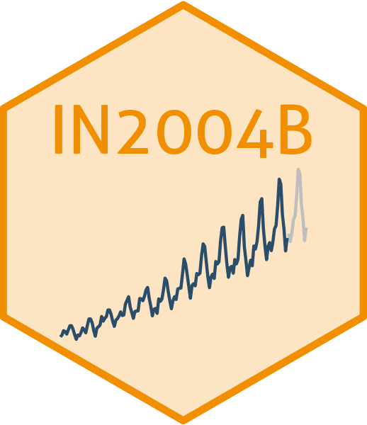

# Importing necessary libraries
import pandas as pd
import matplotlib.pyplot as plt
import seaborn as sns
from sklearn.model_selection import train_test_split
from sklearn.neighbors import KNeighborsClassifier
from sklearn.preprocessing import StandardScaler
from sklearn.metrics import confusion_matrix, ConfusionMatrixDisplay
from sklearn.metrics import accuracy_scoreIntroduction to Neural Networks
IN2004B: Generation of Value with Data Analytics
Alan R. Vazquez
Department of Industrial Engineering
Agenda
Basics and Terminology
Application
When to use a Neural Network
Basics and Terminology
Historical Background
The idea of having “an electronic brain” dates back to the 1940s.
Neural networks rose to fame in the late 1980s, but they did not take off due to the lack of computing power and the discovery of mathematically tractable machine algorithms such as Support Vector Machines.
In the 2010s, NN resurged thanks to the computational speed ups given by newly developed GPUs. They also changed their names to deep learning.
Many innovations follow such as massively parallel computing with GPUs, modern architechtures such as CNNs and RNNS, modern optimization algorithms to train NN, and so on.
Nowadays…
NN have become prominent in many scientific fields.
Their most succesful applications include image classification, video classification, etc. Some of them are fun:
Neutal Network (NN)
Essentially, a neural network is a nonlinear function \(f(\boldsymbol{X})\) to predict the response \(Y\) using a vector of p inputs, \(\boldsymbol{X} = (X_1, X_2, ..., X_p)\).
The function \(f(\boldsymbol{X})\) can be represented as a “network” with several interconnected nodes.
The nodes andnetwork structure might make us think of how the neurons in the brain are connected and communicate to each other. However, this is not true since we still do not know how the brain actualy works!
Terminology
The structure of the NN is called its architecture, which depicts all the components and steps taken to reach the prediction.
The nodes in the network are called units.
The units are divided into groups called layers.
Perceptron
The simplest type of neural network is the perceptron.

Activation Function
An activation function turns several input values into a single number.
NN were originally developed for classification tasks.
Therefore, they use the Logistic or Sigmoid function:
\[g(z) = \frac{1}{1 + e^{-z}}.\]
The function’s output is between 0 and 1, which can be interpreted as the probability for the target class.
Single Layer NN…
has two layers and multiple hidden units.

Modern NNs use the Rectified Linear Unit (ReLU) activation function:
\[g(z) = \begin{cases} 0 \text{ if } z < 0 \\ z \text{ if } z \geq 0 \end{cases}\]
The function’s output is between 0 and \(\infty\).
The ReLU function allows for a more computationally efficient training of a NN than the sigmoid function.

Output Function
The output function takes the values of the hidden units as inputs to output the final prediction of the response
The function \(f\) depends on the type of problem:
Regression: \(f(\beta_{0} + \sum_{k=1}^{2} \beta_{k} A_k) = \beta_{0} + \sum_{k=1}^{2} \beta_{k} A_k\)
Classification: \(f(\beta_{0} + \sum_{k=1}^{2} \beta_{k} A_k) = \frac{1}{1 + e^{-(\beta_{0} + \sum_{k=1}^{2} \beta_{k} A_k)}}\).

Discussion
The user must specify the network architecture: the number of hidden units (\(K\)) to use.
The more hidden units, the longer the training time and the more complex the the NN.
In theory, a NN with one layer and many units will work for any prediction or classification problem. In other words, a NN is a universal approximator.
Multilayer Neural Networks
Multilayer NN have multiple hidden layers.
All neurons in one layer are fully connected to those in the next layer. This is referred to as a fully connected multilayer NN.
Three layers is typical, but more are possible too (a deeper multilayer NN).

Some Comments
Multilayer NN are cheaper to train compared to a single layer NN with many hidden units.
This is because their training leverages modern in GPUs and parallel computing.
Ideally, the multilayer NN is not too wide and should not be too deep.
Application
The required libraries
Before we start, let’s import the data science libraries into Python.
Here, we use specific functions from the pandas, matplotlib, seaborn and sklearn libraries in Python.
When to use a Neural Network
General Remarks
The “deep” in deep learning is not a reference to any kind of deeper understanding achieved by the approach.
Instead, it stands for the idea of successive layers of representations.
Modern deep learning often involves tens or even hundres of sucessive layers.
When should I use a NN?

NN VS Other Algorithms

Return to main page

Tecnologico de Monterrey